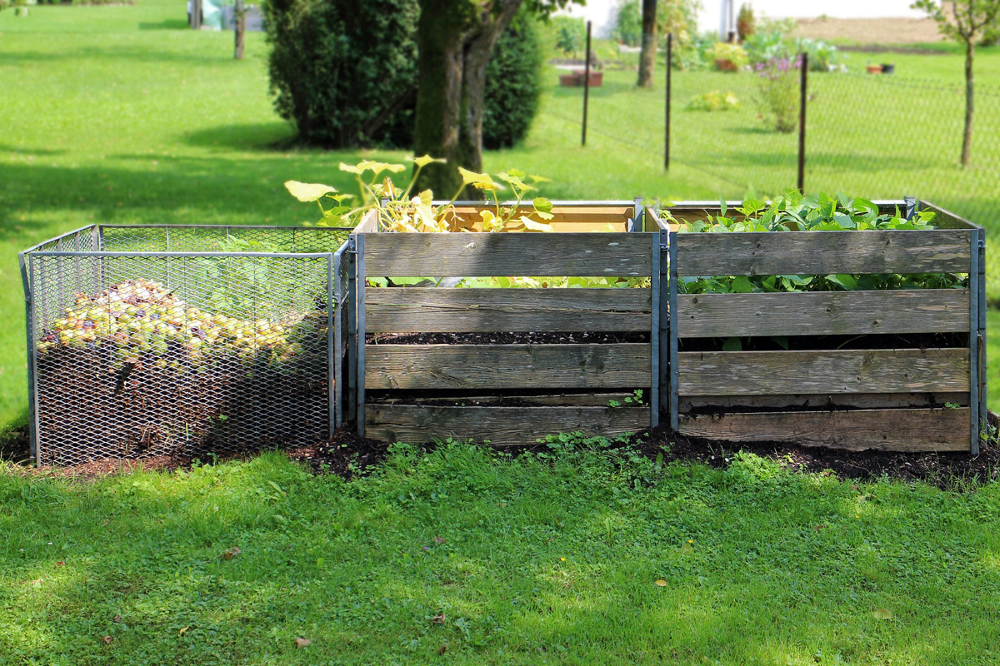
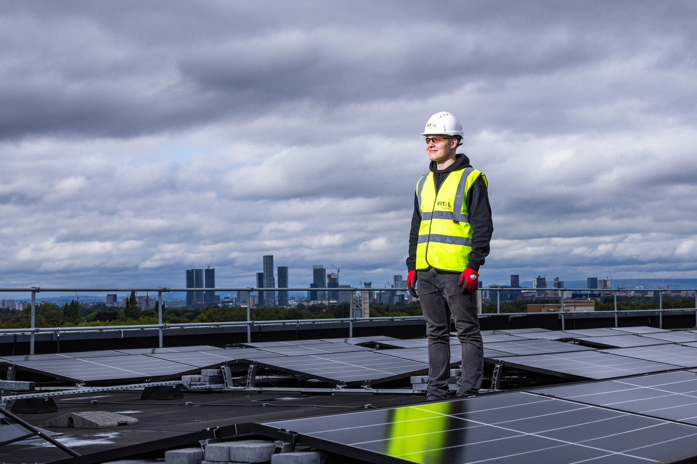
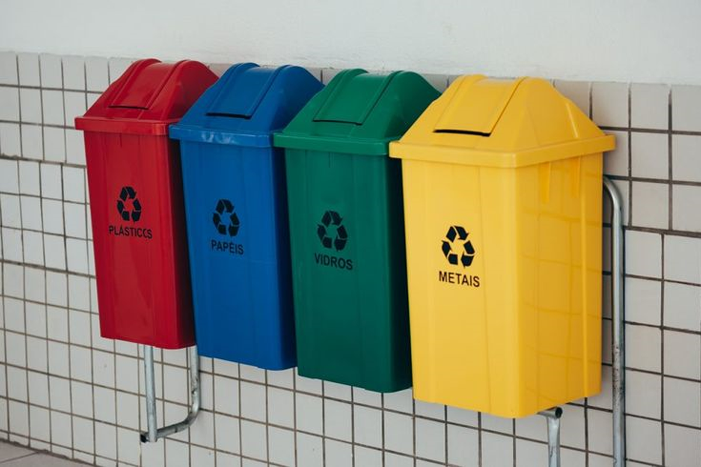

Soluções práticas para um Condomínio Sustentável: Dicas e práticas que fazem a diferença
Imagem de Geralt por Pixabay
Introdução à Sustentabilidade
A sustentabilidade é mais do que uma tendência, é uma necessidade global que começa com pequenas ações no nível local. Em condomínios, onde muitas pessoas compartilham recursos e espaços, há um enorme potencial para implementar práticas que promovam o equilíbrio ambiental e social. Transformar o ambiente onde vivemos em um exemplo de responsabilidade ambiental não é apenas benéfico para a comunidade, mas também para o planeta como um todo. Neste guia, apresentamos dicas e práticas sustentáveis que podem ser adotadas por qualquer condomínio, ajudando a construir um futuro mais verde e consciente.
1. Idealize:
Imagem de PPPSDavid por Pixabay
Ter uma visão clara é o primeiro passo para qualquer projeto de sustentabilidade. Idealizar um condomínio sustentável significa pensar em longo prazo e imaginar como cada ação pode contribuir para o bem-estar da comunidade e para a preservação do meio ambiente. Essa visão ajuda a traçar objetivos realistas e a priorizar iniciativas que possam ser implementadas gradualmente. O planejamento adequado permite identificar recursos necessários, prever desafios e encontrar soluções que envolvam todos os moradores.
Além disso, idealizar práticas sustentáveis envolve inspiração e criatividade. Pesquise exemplos bem-sucedidos de sustentabilidade em outros condomínios ou comunidades e adapte essas ideias à realidade local. Seja a instalação de hortas comunitárias, a criação de áreas verdes ou o incentivo ao uso consciente de água e energia, cada ideia bem pensada pode ter um impacto significativo na qualidade de vida de todos os envolvidos.
2. Compartilhe suas Ideias:
Imagem de StockSnap por Pixabay
A comunicação é fundamental para transformar ideias em ações concretas. Compartilhar seus planos com os moradores e gestores do condomínio cria um senso de colaboração e engajamento. Utilize reuniões, e-mails ou grupos de mensagens para apresentar suas ideias e ouvir sugestões. Essa troca de informações fortalece o sentimento de pertencimento e facilita a adesão de todos às mudanças propostas.
Quando as ideias são compartilhadas, elas têm maior chance de ganhar apoio e se transformar em projetos coletivos. Os moradores podem contribuir com diferentes habilidades e recursos, tornando a implementação das práticas mais eficiente. A transparência no processo e o incentivo à participação ativa fortalecem o compromisso da comunidade com a sustentabilidade.
3. Pratique Compostagem:

Imagem de Antranias por Pixabay
A compostagem é uma maneira simples e eficaz de reduzir a quantidade de lixo orgânico descartado. Ao transformar resíduos de alimentos em adubo, você não só diminui o impacto ambiental do condomínio, como também contribui para a fertilidade do solo nas áreas verdes. Composto orgânico produzido localmente pode ser utilizado em jardins comunitários ou até mesmo em vasos individuais dos moradores.
Além do benefício ambiental, a prática da compostagem também promove a conscientização dos moradores sobre a gestão de resíduos. Ao educar a comunidade sobre a separação adequada do lixo orgânico, o condomínio cria um senso de responsabilidade coletiva. Com o tempo, a prática se torna um hábito natural, reduzindo custos com coleta de lixo e fortalecendo o compromisso com o meio ambiente.
4. Instale Painéis Solares:

Imagem de This_is_Engineering por Pixabay
A instalação de painéis solares é uma solução inovadora e sustentável para condomínios que buscam reduzir sua pegada de carbono. A energia solar é uma fonte limpa e renovável que pode ser utilizada para abastecer áreas comuns, como iluminação externa e elevadores. Embora o investimento inicial possa ser significativo, os benefícios a longo prazo, como economia na conta de energia, compensam amplamente o custo.
Além disso, adotar tecnologias sustentáveis como os painéis solares demonstra o compromisso do condomínio com práticas ecológicas. Isso pode aumentar o valor do imóvel e atrair moradores que priorizam a sustentabilidade. Ao investir em energia solar, o condomínio não apenas reduz sua dependência de fontes não renováveis, mas também se torna um modelo de responsabilidade ambiental para outras comunidades.
5. Implemente a Coleta Seletiva:

Imagem de Evelyn Paz por Pinterest
A coleta seletiva é uma prática essencial para garantir que os resíduos recicláveis sejam devidamente tratados. Separar materiais como plástico, papel, metal e vidro evita que esses itens sejam descartados em aterros sanitários, onde levariam décadas para se decompor. Lixeiras identificadas por cores em locais estratégicos do condomínio tornam o processo mais eficiente e fácil de ser seguido pelos moradores.
Portanto, a coleta seletiva pode ser um ponto de partida para outras iniciativas sustentáveis, como parcerias com cooperativas de reciclagem. Essas parcerias podem gerar renda para comunidades carentes e promover a economia circular. Quando todos participam, os benefícios ambientais e sociais são significativos, criando uma cultura de responsabilidade coletiva.
6. Crie Grupos de Trabalho:
Imagem de StockSnap por Pixabay
A formação de grupos de trabalho é uma estratégia eficaz para implementar mudanças no condomínio. Dividir os moradores em equipes com responsabilidades específicas, como reciclagem, jardinagem ou economia de energia, torna o processo mais organizado e colaborativo. Cada grupo pode se concentrar em soluções práticas, criando um senso de engajamento e pertencimento.
Os grupos de trabalho permitem a troca de conhecimentos e experiências entre os moradores. Aqueles com habilidades específicas, como engenharia ou gestão, podem liderar iniciativas e inspirar os demais. Essa abordagem colaborativa não apenas facilita a implementação de práticas sustentáveis, mas também fortalece o senso de comunidade e cooperação entre os residentes.
A adoção de práticas sustentáveis em condomínios é um passo essencial para promover mudanças positivas na sociedade. Por meio de ações como idealizar soluções, compartilhar ideias, praticar compostagem, instalar painéis solares, implementar a coleta seletiva e criar grupos de trabalho, é possível reduzir impactos ambientais e criar um senso de comunidade mais forte. Cada pequena atitude, quando somada ao esforço coletivo, pode gerar benefícios significativos, tanto para o meio ambiente quanto para os moradores. Vamos juntos transformar nossas comunidades em modelos de sustentabilidade, provando que viver em harmonia com a natureza é uma escolha possível e necessária.